Ladby
Schiffsgrab


87 - Ladby - Wikingermuseum - Letztes Update 10. - 27.04.2024 / 04.05.2024 (Kølstrup Kirchenschiff) / 26.05.2024 Entwicklungsplan 2022-2030 / Anker Nachbau Roskilde / 06.10.2025 diverse Ergänzungen
Navi-Daten: N 55.44308° / O 10.61676° oder: Vikingevej 123, 5300 Kerteminde, Dänemark

Dies ist ein Luftfoto vom 17.04.2023 von Skråfoto, das das Areal um das Museum / den Grabhügel zeigt. Skråfoto ist eine Webanwendung, die von Klimadatastyrelsen weltweit kostenlos bereitgestellt wird - Lizenz: CC BY 4.0. Die Aufnahmen werden seit 2017 alle zwei Jahre erneuert und neben einer Senkrechtaufnahme wird ein Schrägbild aus jeder Himmelsrichtung angeboten, das man über eine Adresssuche aufrufen kann. Oben links ist der Bootssteg im Kerteminde Fjord zu sehen, an dem in den Sommermonaten die Replik des Ladbyschiffs liegt. In seiner Verlängerung in Richtung Süden liegt der ovale Grabhügel und rechts unten mit dem Parkplatz befindet sich das Museum.
26.05.2024
Auf der (dänischsprachigen Ausgabe der) Webseite des "Wikingermuseum Ladby" wird der Entwicklungsplan 2022-2030 in einer 48-seitigen Broschüre mit dem Titel "Ladbykongens verden" vorgestellt. Darin sind die Visionen und Pläne - auch für ein neues Museum - aufbereitet worden, worüber man mehr Aufmerksamkeit insgesamt für das weltweit einmalige Wikingerschiffsgrab, einer außergewöhnlichen archäologischen und kulturhistorischen Attraktion, erregen will.
Mit der Eröffnung der neu gestalteten Ausstellungsräume im Sommer 2007 hat sich die bisher "Ladbyschiff-Museum" benannte Ausstellung in "Wikingermuseum Ladby" umgetauft. Das Gebäude wurde erweitert und es werden nun auch die vormals im Nationalmuseum in Kopenhagen aufbewahrten Originalfunde gezeigt. Die Ausstellung zeigt daneben ein Modell im Maßstab 1:10 von Vibeke Bischoff. Im Kellergeschoss wird ein realitätsnaher Blick auf das Begräbnis des Wikingerhäuptlings von Ladby vermittelt. Der Ladby-König, das Grabgefolge, die Pferde und Hunde wurden vom Holzschnitzer Povl Kjer geschaffen.
Weitere Informationen, die Öffnungszeiten und die Eintrittspreise finden sich - auch in deutscher Sprache - aktuell auf der Homepage des Museums.
In den Jahren 1997-98 war es aufgrund von Grundwasser, Feuchtigkeit und dadurch Befall durch verschiedene Mikroorganismen notwendig geworden unter dem Schiffsgrab eine Art Keller zu bauen, um dem weiteren Verfall des Grabes entgegenzuwirken. Diese Maßnahme hat sich als Erfolg erwiesen - das Schiffsgrab scheint nun dauerhaft geschützt zu sein.
Hier habe ich vier digitalisierte Dias von meinem 2. Besuch des Ladbyschiffs am Dienstag, 06.08.1991. Wie man im Vergleich zu den neueren Fotos im linken Frame sieht, ist der gesamte Erhaltungszustand vor einer damit einhergehenden Restaurierung - insbesondere am Beispiel des Anker mit seiner Kette - sehr schlecht. Ich erinnere mich noch sehr gut, dass es damals ziemlich viele grüne Bereiche - Mikroorganismen - in dem Schiffsgrab zu sehen gab. Leider finde ich aktuell kein passendes Foto dazu, um diesen Zustand wiederzugeben. Im ersten Foto sieht man es aber wohl im vorderen Bereich am Boden nach dem Achtersteven.
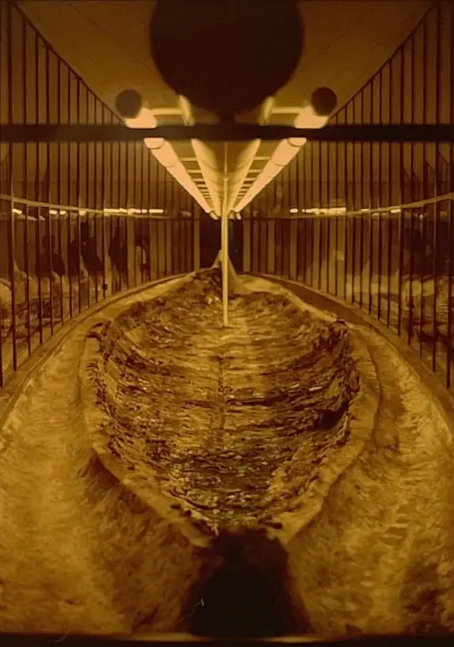
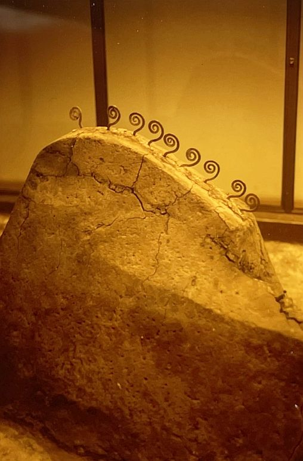
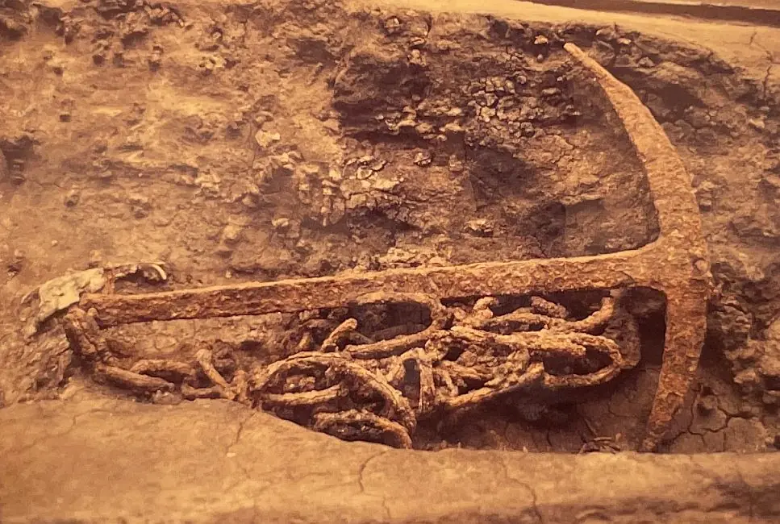
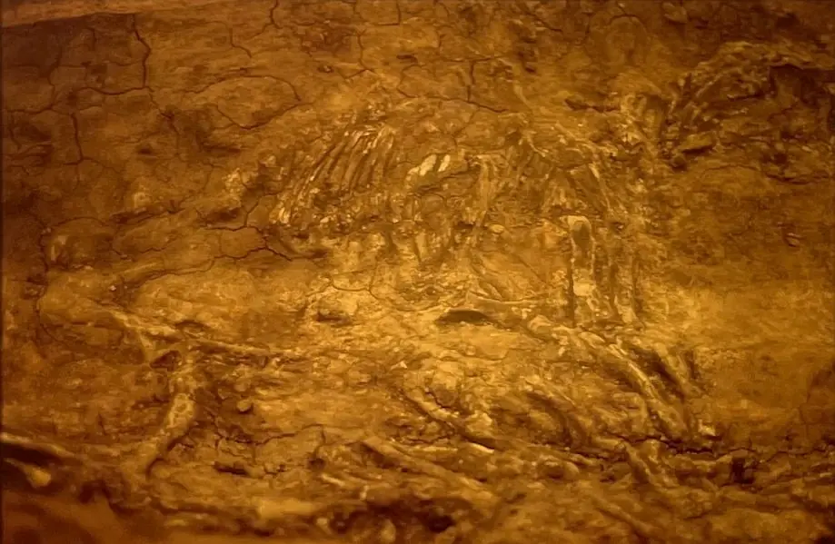
Von einer örtlichen Arbeitsgruppe wurde mittlerweile eine Kopie des Ladby-Schiffs im Maßstab 1:1 gebaut, der "Ladby-Drachen", der am 14. Mai 2016 im Kerteminde Fjord vom Stapel lief. Nun liegt das Schiff das ganze Sommerhalbjahr über unterhalb des Grabhügels am Landungssteg im Wasser. Museumsbesucher dürfen das Schiff gerne in Augenschein nehmen, aber bitte nicht an Bord gehen. Zu bestimmten Zeiten werden inzwischen touristische Fahrten angeboten.
Inzwischen gibt es über YouTube (Übersicht) zahlreiche schöne Videos vom Stapellauf des Schiffs oder hier z.B. vom Segelsetzen im Juli 2022.
Bei meinem letzten Besuch vor Ort, am Samstag, 27. August 2016, habe ich etliche Fotos machen dürfen, diese z.B.:
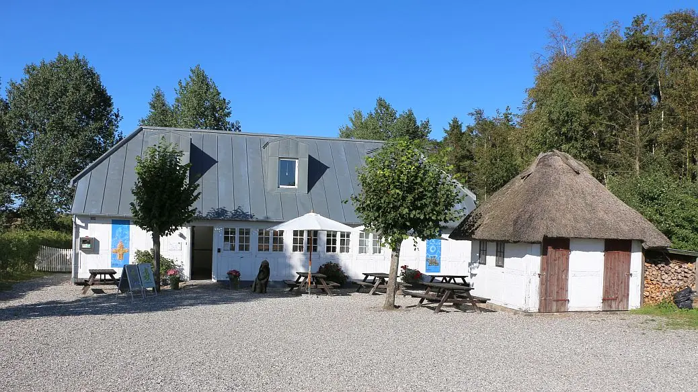
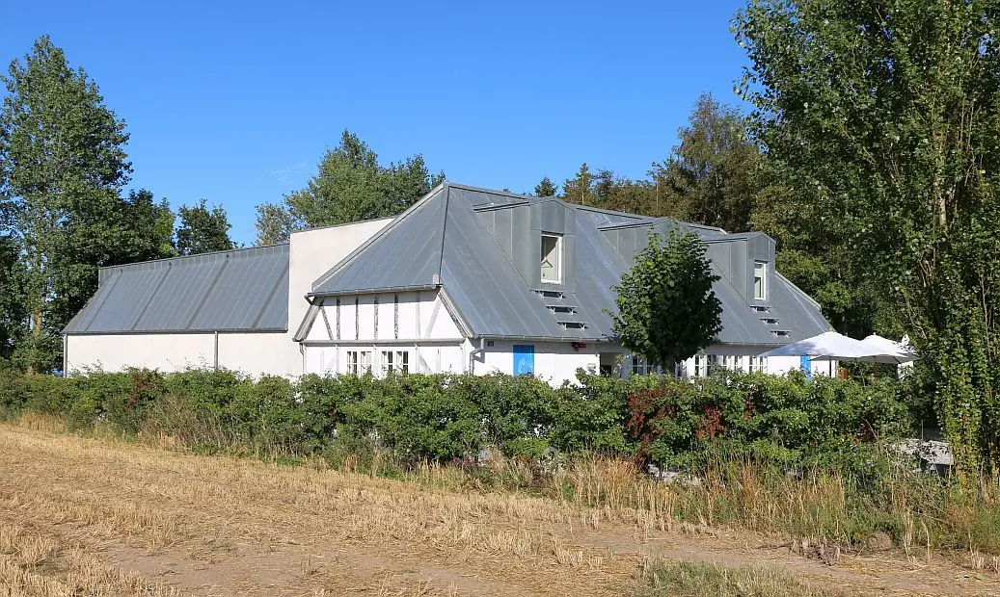
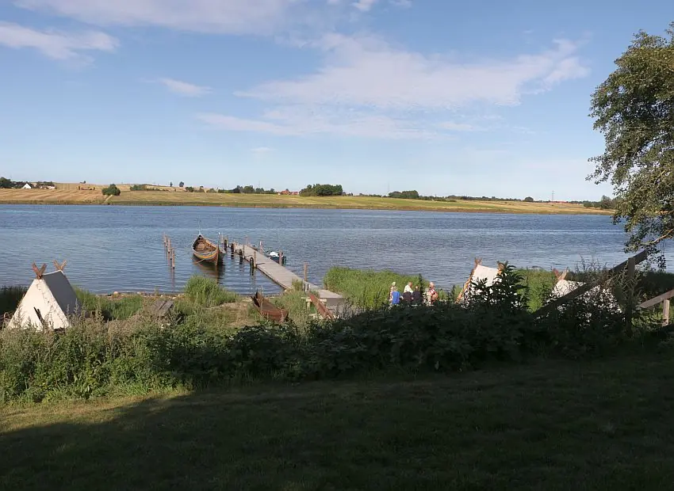
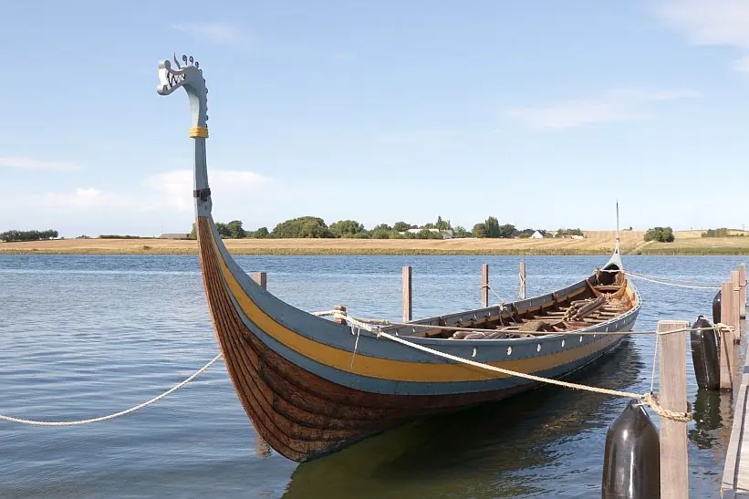
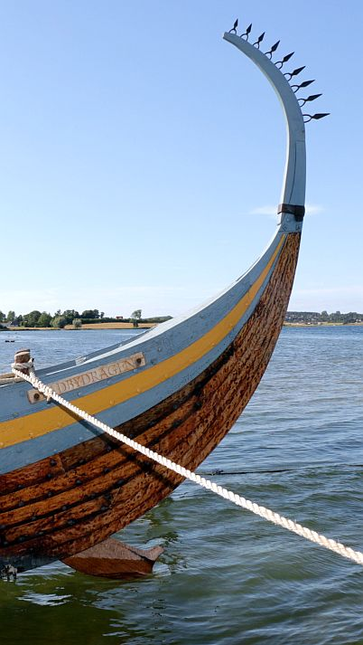
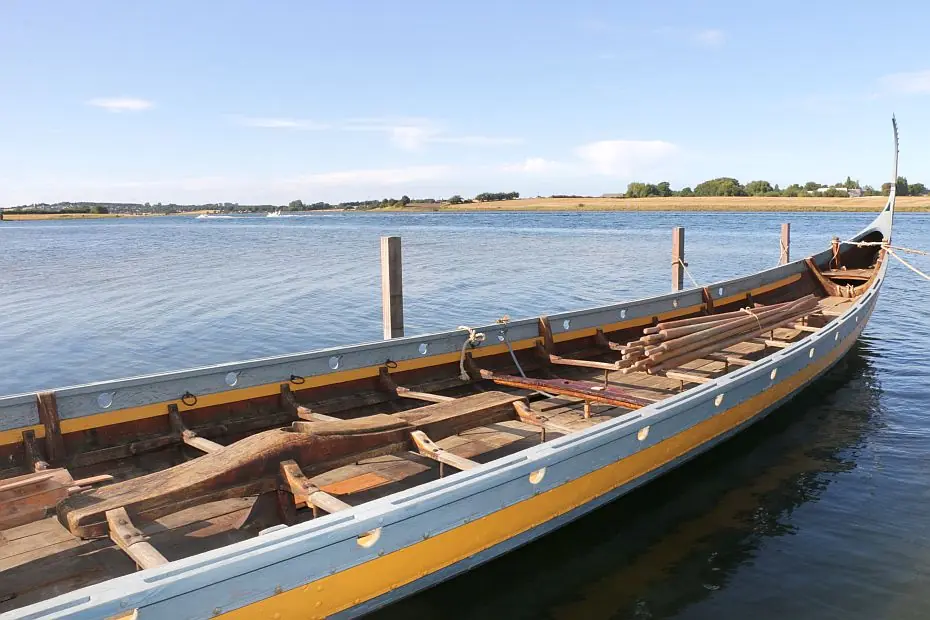

 Eigene Fotos vom 27.08.2016
Eigene Fotos vom 27.08.2016
Die Verzierung des Stevendrachens orientiert sich übrigens auch an einem Fundstück aus Birka. Die Speckstein Gussform fand sich bereits 1887 durch den Knecht Johan Teller in der Siedlungsschicht "Schwarze Erde" und wurde für 6 SEK vom Historiska Museum angekauft. Etwa 130 Jahre später - 2015 - haben Archäologen aus Schweden und Deutschland bei Grabungen im Hafen der Wikingerstadt Birka nahe Stockholm einen kleinen Drachenkopf entdeckt. Als sie eine Menge Eisenklumpen durchsuchten, fanden sie einen Bronzeklumpen mit einem Drachen. Der kleine Drache wurde normalerweise auf eine Drachennadel gesteckt, aber die Nadel für diesen Gegenstand fehlte. Es stellte sich aber heraus, dass der Drache in die Form passte, die 1887 in Birka gefunden wurde. Der Birka-Drachenkopf wurde unmittelbar neben dem Steg entdeckt, dessen Bau dendrochronologisch auf 853/854 n. Chr. datiert wird. Nach der Konservierung wiegt das Artefakt aus Zinn 13,5 g, ist 45 mm lang, hat eine maximale Breite an der Schnauze von 42 mm und einen Hals mit einer Breite von 17 mm. Der doppelseitige Drachenkopf weist ein aufgerissenes Maul mit scharfen Zähnen und dem Rudiment einer verkürzten Zunge sowie einen Perlenrand um den Hals mit einer charakteristischen Lockenmähne auf. Augen, Locken und Perlenrand wurden in einem erhabenen Relief gegossen. Unten am Hals befindet sich eine seitlich abstehende Schlaufe (evtl. für eine Kordel) und ein dreirippiger Gürtelabschluss. An seinem Fuß befindet sich ein kleiner kreisförmiger Schacht, der mit Eisenkorrosion gefüllt ist. Quelle: "The gleaming mane of the serpent: the Birka dragonhead from Black Earth Harbour", Sven Kalmring, Lena Holmqvist - 2018.


Bildquelle:
Links: Gjutform för dräktnål - Historiska museet - (SHM 8139: 7) - Birka dragon - Foto: Ola Myrin - Lizenz: CC-BY-SA
Rechts: Birkas Black Earth Harbour, Archaeological Investigations 2015 2016, Sven Kalmring, Lena Holmquist, Antje Wendt, Uppland, Adelsö Parish, Björkö, L2017:1568, RAÄ 119:1 - S. 103
Ladbyschiff
In Dänemark waren vor 1935 keine Wikingerschiffsfunde bekannt, als der erfahrene und eifrige Amateurarchäologe Poul Helweg Mikkelsen (*08.01.1876 - 07.11.1940, Apotheker in Odense - - link-LIVES) das Ladby-Schiff in einem Grabhügel in der Nähe des Kerteminde Fjord auf dem nordöstlichen Fünen fand.
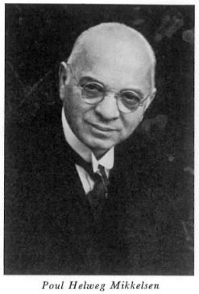
Bildquelle: Fynske Årbøger - 1941 - Artikel von Svend Larsen "Apoteker P. Helweg Mikkelsen" - S. 4611934 war man auf einem Acker des Nymarkshof, unmittelbar nördlich von Ladby, auf die Reste von Gräbern gestoßen.
Man verständigte Poul Helweg Mikkelsen der sich leidenschaftlich für Archäologie interessierte und der sogleich die Untersuchungen aufnahm. Im November diesen Jahres war er gerade mit der Bergung eines Skeletts beschäftigt, als er vom Hofbesitzer, Erik Eriksen, zu einer Stelle unweit gerufen wurde, an der man auf einige Eisengegenstände gestoßen war, als man dort größere Steine entfernte. Dieser Fund lag in den Resten einer länglichen Erhöhung, die Mikkelsen bereits aufgefallen war.
Hier eine historische Landkarte vom Umfeld von Ladby aus dem Jahr 1809 im Maßstab 1:4000. Darauf sind auffällige Feldbezeichnungen wie 1. "Gravs Agrene", 2. "Höÿe Stens Agre" und 3. "Ormehöÿs Agre" aufgeführt, die ihre Bedeutung im Zusammenhang mit dem Grab des Wikingerhauptlings von Ladby haben könnten. Mit dem roten Kreis habe ich den Grabhügel markiert.
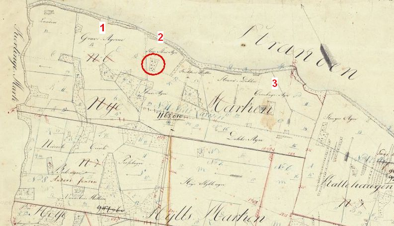
Bildquelle: Historiske Kort / Styrelsen for Dataforsyning og InfrastrukturEnde Februar 1935 kehrte er mit Dr. phil. Svend Larsen (*03.03.1905 - 09.04.1964, Archäologe - link-LIVES - Lebensbeschreibung) zurück, der 1946 der Leiter des Fyns Stiftsmuseum (heutiges Museum Odense) bis zu seinem Tod wurde.
Bildquelle: Museum Odense - Lizenz: CC BY-SA 4.0
Die beiden erkannten sehr schnell, dass es sich hier um einen außergewöhnlichen Fund, nämlich um ein Bootsgrab, handelte. Man verständigte daher umgehend Dr. Johannes Brøndsted (*05.10.1890 - 16.08.1965, Archäologe) vom Nationamuseum in Kopenhagen. Dieser schickte am 02.03.1935 ein Telegramm an "APOTEKER MIKKELSEN ODENSE" mit dem Text "ROSENBERG ANKOMMER SØNDAGAFTEN PARKHOTEL STOP TILLYKKE VIKINGESKIB = BRØNDSTED". Bereits am darauffolgenden Tag, Sonntag, 03. März 1935, kam dann Konservator Gustav Adolf Theodor Rosenberg (*08.06.1872 04.12.1940, Archäologe - link-LIVES), der 14 Jahre zuvor der Ausgräber des Hjortspringbootes (um 350 v. Chr. datiert) war, vor Ort. Er war zu der Zeit der Fachmann für derartige Funde schlechthin.
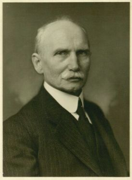
Bildquelle: Königliche Bibliothek Kopenhagen - Lizenz: CC-BY-SADie Ausgrabungen starteten im Mai 1935 durch Rosenberg unter nahezu täglicher Unterstützung durch Mikkelsen. Zu der ersten Grabungssaison - 21. Mai bis 04. Oktober 1935 - hat Mikkelsen ein handschriftliches Ausgrabungstagebuch "Udgravningen af Vikingeskibet paa Nymarksgaardens Mark ved Ladby" geführt (Odense Museum - digitalisierte Ausgabe - 137 Seiten). Darin startet er mit diesem Eintrag:
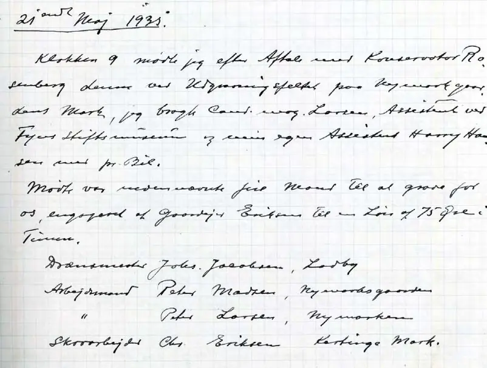
Übersetzung:
Dienstag, 21. Mai 1935
Um 9 Uhr traf ich mich nach Absprache mit Konservator Rosenberg am Ausgrabungsfeld auf Nymarkshof und brachte Cand. mag. Larsen, Assistent am Fünen Stiftsmuseum, mich und meinen eigenen Assistenten Harry Hansen per Auto dorthin.
Unten sind die vier Arbeiter angeführt, die uns bei den Grabungsarbeiten halfen und die der Hofbesitzer Eriksen mit 75 Öre pro Stunde entlohnte.
Entwässerungsmeister Johs. Jacobsen, Ladby / Arbeiter Peder Madsen, Nymarkshof / Arbeiter Peter Larsen, Nymark / Waldarbeiter Chr. Eriksen, Kertinge Mark.
Das Wikingerschiff von Ladby ließ sich nicht aus der Erde heben, in der es ruhte. Stattdessen wurde nach Abschluss der Ausgrabung eine Betonkuppel über dem Schiff errichtet, so dass es auch heute wieder in einer Art Grabhügel ruht.
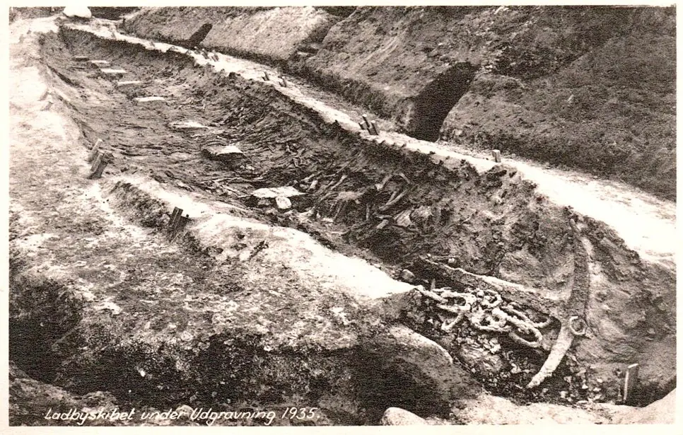
Ansichtskarte von 1935 - Nationalmuseum in Kopenhagen - Lizenz: CC-BY-SA
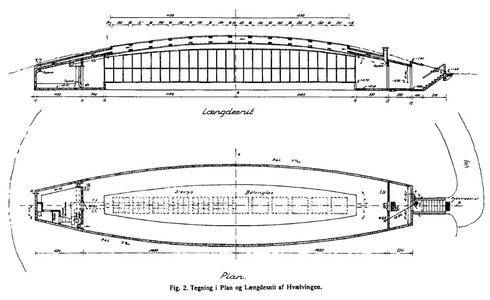
Plan für die Betonkuppel - aus: Gustav Rosenberg - Fra Nationalmuseets Arbejdsmark - 1937 - Skibsgraven ved Kerteminde Fjord - S. 27 - 31 / Seite 28
Das Ladby-Schiff war ein langes und schlankes Schiff gewesen mit niedriger Reling und flachem Boden. Mit einer Länge von 21,60 m war es mittschiffs nur 2,85 m breit, und die Tiefe von der Reling bis zum oberen Rand des Kiels - mittschiffs - betrug nicht mehr als 0,70 m. Die ca. 2000 Nieten und Nägel, die übrig waren, zeigten, dass es sich um ein in Klinkertechnik gebautes Schiff mit wahrscheinlich 7 Plankengängen handelte. Die erhaltenen Reste der ursprünglichen Kalfaterung aus Kuhhaar und Schafwolle zwischen den Planken zeigt, dass das Schiff zwischen 885 und 1035 genutzt wurde (C-14 Datierung). Vermutlich hatte es ein Segel, darauf lassen zumindest die erhaltenen Wantenringe schließen und wurde wohl von 30-32 Ruderern gefahren.
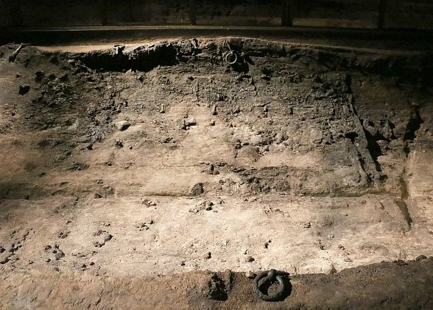
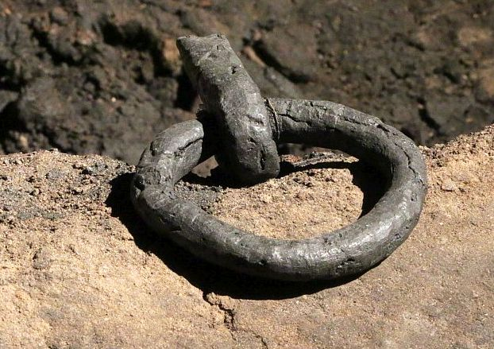
Eigene Fotos vom 27.08.2016Schiffsbereich mit den Wantenringen / Wantenring im Detail.
Hier eine Skizze zu dem gesamten Schiffsgrabbefund mit den eingezeichneten Fundgegenständen.
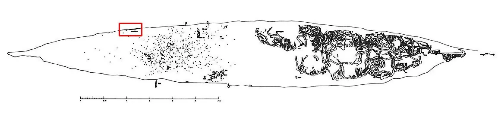
Bildquelle: Knud Thorvildsen - Das Wikingerschiff von Ladby - Hrsg.: Dänisches Nationalmuseum - 3. Auflage 1982 - Seite 9 - mit dem roten Rahmen habe ich die Fundlage des bemalten Holzstücks gekennzeichnet (siehe unten).
Das erste, worauf die Ausgräber im Vorschiff stießen, war der große eiserne Anker, der unberührt ganz vorne im Vordersteven lag. Es ist ein vollständiger 1,26 m langer und 0,83 m breiter sogenannter Stockanker mit ca. 10 m langer eiserner Ankerkette - ca. 50 Kettenglieder - und einem geschätzten Gewicht von 4050 kg. Die Ankerkette ist übrigens ein einzigartiger Fund, den es aus der Wikingerzeit kein zweites Mal gibt! Die Maße des Ankers - zuletzt 1994 erfasst - wurden bei Messungen im Jahr 1944 mit 1,36 m x 0,84 cm ermittelt. Korrosion kann den Längenunterschied von 10 cm aber nicht erklären, trägt Anne C. Sørensen in ihrem Buch "Ladby - A Danish Ship-Grave from the Viking Age - Ships and Boats of the North - Volume 3 - 293 Seiten - 2001" auf der S. 52 vor. Es muss damals tatsächlich ein Messfehler vorgelegen haben!
 Eigenes
Foto vom 27.08.2016
Eigenes
Foto vom 27.08.2016
Mit dem allmählichen Voranschreiten der Ausgrabung wurde deutlich, dass das ganze Vorschiff mit Tierknochen angefüllt war. Auf dem Boden lagen völlig ungestört 11 ganze Pferdeskelette. Diese waren vom Typ der heutigen Island Pferde mit einer Höhe von ca. 1,25 m und einem Alter zw. 5 und 20 Jahren. Hinter den Pferden an Steuerbord lag eine kleine eiserne Axt. Vielleicht die Axt, die beim Schlachten der vielen Pferde angewandt worden ist. An Steuerbord eben hinter der Schiffsmitte wurde ein ganzer Haufen Pferdegeschirr unter einer dicken Schicht von beinahe vermodertem Zeug gefunden. Es lagen hier zwei ganze Sätze Geschirr, jedes bestand aus Steigbügeln, Kopfgeschirr mit Trense und Zügel sowie Beschlägen und Schnallen für die Lederriemen. Zur Reitausrüstung des Toten können auch einige Stücke einer versilberten Eisenstange mit feinen Ornamenten gezählt werden, vielleicht die Teile eines Peitschenstiels.
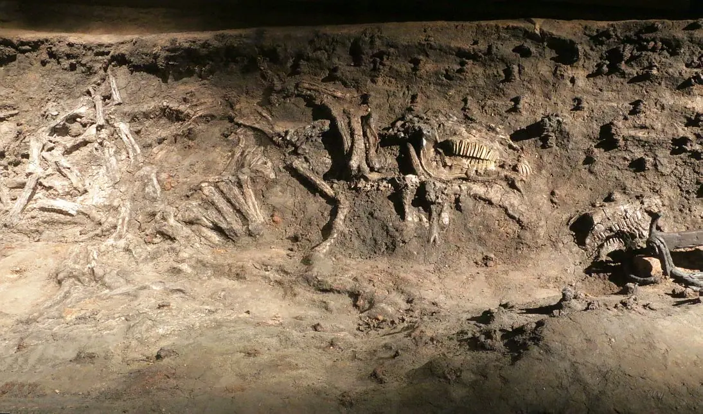
Eigenes Foto vom 27.08.2016Unter den Pferden fanden sich auch Skelette von mehreren Hunden. Bei den Hunden fand sich das Geschirr für 4 Hunde. Ein prachtvolles Sammelstück aus vergoldeter Bronze hat die Riemen der einzelnen Hunde in der Hand des Führers vereinigt.
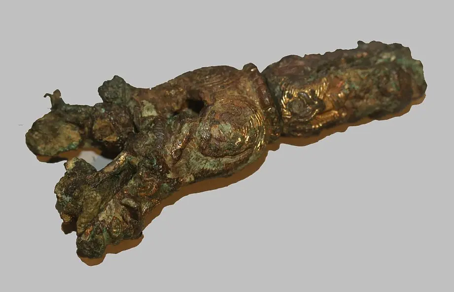
Eigenes Foto vom 27.08.2016Weitere Fundstücke lagen im ganzen Schiffsraum verstreut vom Boden bis zur Reling, am dichtesten die ersten Meter hinter der Schiffsmitte. Außerhalb der Reling lag nur ein Bund von ca. 45 Pfeilspitzen in einem Köcher. Von einem Holzgefäß (Durchmesser ca. 50 cm) mit Eisenbeschlägen konnten ungefähr 60 verschiedene Stücke aufgesammelt werden, und diese Fragmente lagen über nicht weniger als 8 m² verstreut.
Gefunden wurden auch Reste eines zerfallenen Spielbretts, dessen Ecken, die eingezapft und außerdem mit eisernen Beschlägen gesichert worden waren. Die zu dem Brett gehörenden Spielsteine wurden nicht gefunden, sie können jedoch aus Holz oder Knochen gewesen sein und sind dann völlig vermodert. Von anderen Wikingergräbern her weiß man, dass ein derartiges Brett schachbrettartig gemustert gewesen ist, und dass zwei Sätze aus mindestens 14 gleichen Steinen bestanden sowie einem, der größer und von anderer Ausführung als die anderen war.
Eigentliche Stoffreste sind im Boot nicht erhalten, aber vielerorts waren kleine Textilfragmente doch erkennbar als Abdrücke in der Rostschicht der Eisenstücke. Sie erzählen, dass sowohl feineres als auch gröberes Gewebe angewandt worden ist. Auf die gleiche Weise enthielt der Rost auch Federn, Daunen und kleine Haarbüschel. Der Tote hat sicher auf Feder- und Daunenkissen geruht. Die Haarbüschel können von Pelzwerk stammen. Kunstvoll geflochtene Silber- und Goldfäden wurden an mehreren Stellen gefunden und zeugen von der Anwesenheit kostbarer golddurchwirkter Kleidung.
Da Farbspuren von gemalten Gegenständen ungeheuer selten in Funden der Vorzeit sind, war es merkwürdig, ein gemaltes Holzstück zu finden, das ganz mit geometrischen Ornamenten in roter, grüner und schwarzer Farbe bedeckt war. Welchem Zweck das Holzstück gedient hat, lässt sich nicht sagen. Es maß 0,45 x 0,60 m und lag auf der Schiffsseite. Leider vertrugen die Farben dieser Malerei kein Tageslicht; ein Jahr nach der Aufdeckung waren sie ganz verschwunden. Eine Kopie, die sofort nach der Ausgrabung angefertigt wurde, muss nun das Verlorene ersetzen.
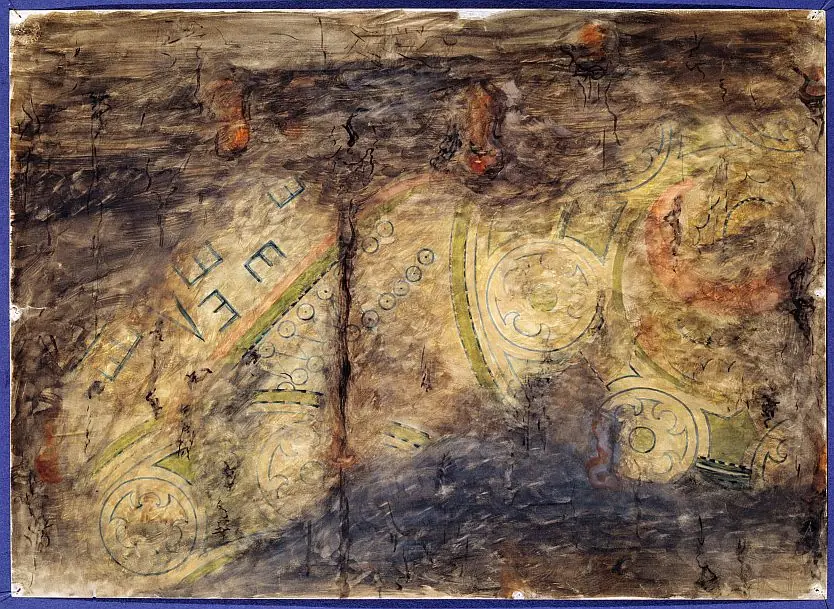
Bildquelle: Digitale Sammlung Nationalmuseum Kopenhagen - Fotograf: N. Elswing - Lizenz: CC-BY-SA
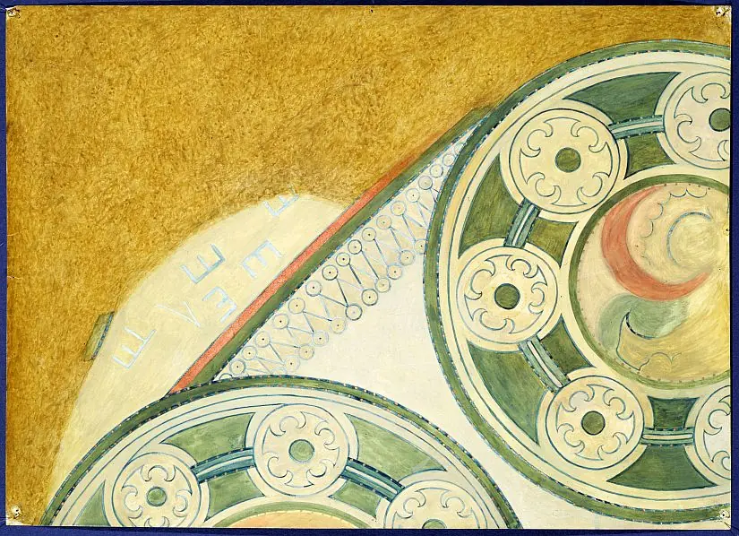
Rekonstruktionsvorschlag von Gustav Rosenberg - Bildquelle: Digitale Sammlung Nationalmuseum Kopenhagen - Fotograf: N. Elswing - Lizenz: CC-BY-SA
In den großen norwegischen Wikingerschiffen von Gokstad und Oseberg war der Tote mit der persönlichen Ausrüstung in einer Grabkammer aus schwerem Holz niedergelegt worden, die eben hinter dem Mast erbaut worden war. Im Schiff von Ladby wurden Spuren einer derartigen Grabkammer nicht gefunden. Es kann dennoch kein Zweifel darüber herrschen, wo im Schiffe die Leiche gelegen hat. Ungeachtet des Vorhandenseins einer gezimmerten Grabkammer besteht nämlich in Grabbooten aus dem späteren Teil der Vorzeit die Regel, dass der Tote zusammen mit einem großen Teil des mitgegebenen Grabgutes direkt hinter der Schiffsmitte niedergelegt wird. Bei der Untersuchung des Ladby-Schiffes erwartete man daher, den Toten gerade an diesem Ort im Schiffe zu finden, wo all die vielen Gegenstände hervorgegraben wurden. Es wurden aber hier ebenso wenig Spuren eines Skelettes gefunden wie andernorts im Boot. Es lag nahe, die Abwesenheit von Skelettspuren in Verbindung mit dem Mangel an anderen Gegenständen zu setzen. Die Funde des Schildbuckels und der Pfeilspitzen geben an, dass der Tote ein Mann gewesen ist, und man könnte also erwarten, ein Schwert oder möglicherweise auch eine Waffenaxt oder eine Lanze zu finden, da diese Gegenstände zum festen Inventar in reich ausgestatteten Mannesgräbern der Wikingerzeit gehören.
Die Abwesenheit des Skelettes und der Waffen des Bestatteten muss in Verbindung mit den Störungen gesehen werden, die die Ausgrabung des Achterschiffes enthüllte; Grabräuber haben sich durch den Hügel bis zum Schiffe gegraben. Sie haben es mitten an der Backbordreling erreicht, denn hier fehlte der südliche der vier Wantenringe dieser Reling, und ein weiterer, der ca. 1 m nördlich von diesem gesessen hat, war losgerissen worden und wurde Innenbords gefunden. Nachdem sie auf das Schiff gestoßen sind, scheinen die Räuber dem Vorschiff keine Aufmerksamkeit geschenkt zu haben, sondern sie haben das Achterschiff durchsucht. Kostbare Gegenstände, wie die prachtvollen Sätze Geschirr, die an Steuerbord lagen, sowie die massive Silberschnalle, haben sie entweder nicht entdeckt oder ihnen kein Interesse geschenkt. Andere ebenso kostbare Gegenstände, wie z.B. den schönen silbergeschmückten Peitschenstiel und den silbernen Teller, haben sie entzwei gebrochen oder zertreten. Dagegen sieht es so aus, als haben sie den Toten und Teile seiner persönlichen Ausrüstung ganz entfernt.
Es ist wohl natürlich, diese Zeichen von Grabraub mit den Umständen zu vergleichen, wie sie bei der Ausgrabung der großen norwegischen Schiffsbestattungen beobachtet wurden. Auch hier haben sich die Grabräuber durch den Hügel hindurch bis zum Achterteil des Schiffes gegraben, wo sie die Leiche aus der Grabkammer entfernt haben, während sie den größten Teil der Gegenstände, die sie in der Grabkammer zurückließen, zerschlagen oder zerstört haben. Anton Wilhelm Brøgger (*11. Oktober 1884 - 29. August 1951, norwegischer Archäologe), der diese Zeichen von Grabraub studiert hat, hat überzeugend festgestellt, dass die Einbrecher nicht gewöhnliche Räuber gewesen sein können. Nur der Tote selbst und seine Wohnung, also das eigentliche Grab, war ihr Ziel. Da die Plünderung keine leichte Arbeit gewesen sein kann - er schätzt, dass es eine oder zwei Wochen in Anspruch genommen haben muss, die großen norwegischen Grabhügel zu durchgraben und die Zerstörung zu bewerkstelligen - man kann sie nicht heimlich vorgenommen haben. Bei dem Studium der Sagaliteratur, in der Hügelplünderungen erwähnt werden, meint Brøgger, den Vorstellungen auf die Spur gekommen zu sein, die hinter dieser offen ausgeführten Grabschändung liegen und sie angeregt haben. Diese vornehmen Toten, die auf heidnische Art begraben worden waren, und denen man vielleicht immer noch heimlich opferte, wurden in der ersten christlichen Zeit verzaubert und gingen um; sie machten das Leben für die Bewohner der Gegend unheimlich und schrecklich. Darum ist man auf sie losgegangen, man hat ihrem Umgehen ein Ende bereitet, und dieses muss mit der Zustimmung der örtlichen Bevölkerung und der Sippe geschehen sein.
Da die Umstände bei dem Ladby-Schiff sowohl in Bezug auf die Bestattung und die spätere Grabplünderung dem Bild der norwegischen Schiffsbestattungen dermaßen gleichen, kann nicht ausgeschlossen werden, dass Brøggers Deutung den Weg angibt, will man den Hintergrund der Plünderung des Ladby-Schiffes verstehen. Die Formen und die Ausschmückung der im Boot gefundenen Gegenstände zeigen, dass das Grab bei Ladby ca. 950 Jahre nach dem Anfang unserer Zeitrechnung angelegt worden ist. Dies war gerade die letzte Zeit des Heidentums; kurz danach begann das Christentum die dänische Bevölkerung in seinen Bann zu ziehen. Möglicherweise lässt sich durch die Schiffsbestattung bei dem fünischen Fjord der Kampf zwischen Alt und Neu spüren, der in einer solchen Epoche unvermeidlich gewesen sein muss. Ein Häuptling, der hier mit Pomp und Pracht nach heidnischer Sitte bestattet worden war, wurde vielleicht später, als er als ruheloses Gespenst umging, mit Gewalt von seinem Schiffe entfernt, in dem er zur Ruhe gebettet worden war zwischen seinen liebsten Tieren und Gegenständen.
Ein Augenzeuge berichtet von einer Schiffsbestattung aus der Wikingerzeit
Der Verfasser ist ein Araber namens Ibn Fadlan. Er war Mitglied einer Handelsabordnung, die der Kalif von Bagdad im Jahre 921 zu den bulgarischen Völkern entsandte, die damals an der Wolga wohnten. Nach seiner Heimkehr nach Bagdad schrieb er einen Bericht nieder von all den merkwürdigen Erlebnissen, denen er auf seiner Reise begegnet war. Zu dem Merkwürdigsten gehörte eine Begegnung, die er am Ufer der Wolga mit nordischen Wikingern hatte. Seine Beschreibung dieser Russen, wie er sie nennt, enthält eine Schilderung von einer Häuptlingsbestattung, der er das Glück hatte beizuwohnen. Etwas verkürzt lautet die Übersetzung des Berichtes von Ibn Fadlan über die Bestattung folgendermaßen:
Dann hörte ich eines Tages, dass einer ihrer angesehenen Männer gestorben war. Sie legten ihn in das Grab und deckten es über ihm 10 Tage lang, bis sie fertig waren, seine Kleider zuzuschneiden und zu nähen. Zu den Sklavinnen des toten Mannes sagten sie: Wer will mit ihm sterben?. Eine von ihnen sagte: Ich. Zwei Sklavinnen wurde auferlegt, auf sie Achtzugeben und mit ihr zusammen zu sein, wo sie auch hingehe.
Als der Tag kam, wo er und seine Sklavin verbrannt werden sollten, ging ich zum Fluss hernieder, wo sein Boot lag. Es war nun an Land gezogen und auf einer Art Holzgerüst gesetzt worden. Dann kamen sie mit einer Bank, setzten sie auf das Schiff und bedeckten sie mit Decken und Kissen aus byzantinischer Seide. Dann kam eine alte Frau, die der Todesengel genannt wurde. Sie beaufsichtigte das Nähen der Kleidung für den Toten und die Ausschmückung der Leiche. Ich sah, dass sie eine alte Hexe war, dick und finster von Aussehen.
Als sie das Grab erreichten, entfernten sie die Erde von dem Holzwerk, danach nahmen sie das Holz fort. Dann zogen sie dem Mann die Kleider aus, in denen er gestorben war, und gaben ihm Hosen, Stiefel, Rock und einen Mantel aus Seide mit Goldknöpfen daran, dann setzten sie ihm eine Mütze aus Seide und Pelzwerk auf den Kopf und trugen ihn in das Zelt, das auf dem Schiff stand; dort setzten sie ihn auf die Decke und stützten ihn mit den Kissen. Dann kamen sie mit Brot, Fleisch und Zwiebeln, das wurde vor ihn hingeworfen. Dann kamen sie mit einem Hund, schnitten ihn in zwei Hälften und warfen ihn in das Schiff. Danach kamen sie mit all seinen Waffen, sie wurden an seine Seite gelegt. Dann nahmen sie zwei Pferde und ließen sie laufen, bis sie schwitzten, sie wurden dann mit dem Schwert in Stücke gehauen, und das Fleisch wurde in das Boot geworfen. Sie kamen ebenfalls mit zwei Kühen, die auch in Stücke gehauen und ins Schiff geworfen wurden. Danach kamen sie mit einem Hahn und einem Huhn, auch sie wurden getötet und ins Schiff geworfen.
Als es Freitagnachmittag geworden war, nahmen sie die Sklavin und gingen mit ihr hin zum Boot. Hier nahm sie ihre beiden Armreifen und ihre beiden Knöchelringe ab und gab sie der alten Frau, die der Todesengel genannt wurde. Danach führten sie sie aufs Schiff, ließen sie aber nicht in das Zelt hineinkommen. Dann kamen die Männer, sie hatten Schilde und hölzerne Stöcke mit sich und reichten ihr einen Becher Bier. Sie sang darüber und trank ihn aus. Der Dolmetscher sagte da zu mir: Damit nimmt sie Abschied von ihren Freundinnen. Danach wurde ihr noch ein Becher gereicht. Sie nahm ihn und zog den Gesang sehr in die Länge; aber die alte Frau trieb sie nun an, um sie zum Austrinken zu bewegen, damit sie ins Zelt gehe, wo ihr Herr sich befand. Da sah ich sie an, und sie war ganz verwirrt. Sie wollte ins Zelt gehen, steckte aber den Kopf daneben. Da nahm die Frau ihren Kopf und bekam ihn in das Zelt, und selbst ging sie mit dahinein. Die Männer begannen nun mit ihren hölzernen Stöcken auf die Schilde zu schlagen, damit ihre Schreie nicht gehört werden sollten, und die anderen Mädchen erschrecken und davon abhalten könnten, den Tod zusammen mit ihrem Herrn zu suchen. Nun gingen sechs Männer in das Zelt, und alle hatten sie geschlechtlichen Verkehr mit dem Mädchen. danach legten sie sie neben ihren toten Herrn. Zwei Männer nahmen ihre Beine und zwei andere ihre Arme, während die Frau, die der Todesengel genannt wurde, ein Seil um ihren Hals legte, und die beiden Enden den letzten beiden Männern reichte, damit sie daran ziehen sollten. Dann trat die Frau vor mit einem Dolch mit breiter Klinge und begann, ihn zwischen die Rippen des Mädchens hinein- und herauszuziehen, während die beiden Männer sie mit dem Seil erdrosselten.
Danach trat derjenige der Männer, der am nächsten mit dem Toten verwandt war, hervor. Er nahm ein Stück Holz und steckte es an. Dann ging er rückwärts zum Schiff und hatte das Stück Holz in der einen Hand, während die andere auf seinem Gesäß ruhte, er war nackend. So wurde das Holz angezündet, das sie unter das Boot gelegt hatten. Dann kam das Volk hinzu mit Holz und Feuer, und eine Stunde war nicht vergangen, ehe das Boot und das Holz und die Sklavin und der Herr zu Asche geworden waren. Danach erbauten sie an der Stelle, wo das Boot gestanden hatte, so etwas wie einen runden Hügel. Mitten auf diesem Hügel errichteten sie ein hölzernes Denkmal aus Birke. Darauf schrieben sie des Mannes Namen und den Namen des Königs, und dann gingen sie ihrer Wege."
Literatur: von C. M. Frähn (*04.06.1782 - 28.08.1851, Orientalist) - 1823 - Ibn-Foszlan's und anderer Araber Berichte über die Russen älterer Zeit
alternativ über Archive.org: Ibn-Foszlan's und anderer Araber Berichte über die Russen älterer Zeit
alternativ über BSB München: Ibn-Foszlan's und anderer Araber Berichte über die Russen älterer Zeit
Literaturhinweise:
Ladby - Handschriftliches Ausgrabungstagebuch "Udgravningen af Vikingeskibet paa Nymarksgaardens Mark ved Ladby" (21. Mai bis 04. Oktober 1935) - von Apotheker Helweg Mikkelsen - Odense Museum - digitalisierte Ausgabe - 137 Seiten
Gustav Rosenberg - Fra Nationalmuseets Arbejdsmark - 1937 - Skibsgraven ved Kerteminde Fjord - S. 27 - 31
Knud Thorvildsen - Ladby Skibet - Nordiske Fortidsminder - Vol VI,1 - Antiquites Scandinaves - Universitetsforlaget in Copenhagen - 1948-1954 - 121 Seiten - zahlreiche Pläne und Zeichnungen
Carl V. Sølver - The Ladby Ship Anchor - in: The Mariner's Mirror - Volume 44 - 1958 - S. 294-301
Michael Müller-Wille - Bestattung im Boot. Studien zu einer nordeuropäischen Grabsitte - Offa 25/26 · 1968-69 - 1970 - S. 161 u.a.
Knud Thorvildsen - Das Wikingerschiff von Ladby - Hrsg.: Dänisches Nationalmuseum - 3. Auflage 1982 - 44 Seiten
Madsen, C. & Thrane, H. - Skibsjubilæum - Skalk - 1/1985 - S. 3-7
Henrik Thrane - The Ladby ship revisited - Antiquity 61 - 1987 - S. 41-49
Egon Wamers - The Symbolic Significance of the Ship-graves at Haiðaby and Ladby - in: The Ship as Symbol in Prehistoric and Medieval Scandinavia - 1995 - S. 149-159
Henrik Thrane - Ladbyskibsgraven i 1935, 1985 og 1995 - Fynske Minder 1996 - S. 33-45
Anne C. Sørensen - Ladby - A Danish Ship-Grave from the Viking Age - Ships and Boats of the North - Volume 3 - 293 Seiten - 2001 - das Standardwerk aus heutiger Sicht
Vibeke Bischoff - The Reconstruction of the Ladby ship - Using a Working Spline Model and Computer - Boats, Ships and Shipyards. Proceedings of the Ninth International Symposium on Boat and Ship Archaeology Venice 2000 - S. 71-80
Anne C. Sørensen und Peter Pentz - Ladby - Ein Schiffsgrab aus der Wikingerzeit - 2008 - 26 Seiten - 17 x 17 cm
Eigil Nikolajsen - Vikingeskibet og Apotekeren - Østfyns Museer 2010 - 131 Seiten - ca. 21 x 21 cm - beinhaltet die Auswertung des Tagebuchs von Apotheker Helweg Mikkelsen
Eigil Nikolajsen - Diagnose: Vikingeskib. I 75-året for fundet af Ladbyskibet - in: Historisk Samfund for Fyn - 2010 - S. 25-38
Mette Ladegaard Thøgersen - Vikingemuseet Ladby - Grav, skib og museum - Østfyns Museer 2015 - 74 Seiten - ca. 21 x 21 cm - mit tollen Zeichnungen / Illustrationen
Claus Feveile - Understanding the Hinterland of the Ladby Ship Grave - in: 17th Viking Congress Shetland 2013 - 2016 - S. 229-235
Ladbytapetet - 17-seitiger Klappbogen mit der Wiedergabe des Ladby Teppich - Sechs Jahre benötigten die Stickerinnen, um den 7 m langen und 50 cm breiten Bildteppich in 2017 fertigzustellen
"The gleaming mane of the serpent: the Birka dragonhead from Black Earth Harbour", Sven Kalmring, Lena Holmqvist - 2018
Unter der Überschrift (übersetzt): "Ein beeindruckender Eisenanker der Wikingerzeit wird im Wikingerschiffmuseum nachgebaut" wird - 23.05.2024 - auf den Webseiten des Wikingerschiffsmuseum in Roskilde auf ein besonderer Projekt hingewiesen: "Glühendes Eisen, der zischende Atem eines Blasebalgs und das Geräusch von Metall auf Metall. Derzeit arbeiten Schmiedestudenten aus England in einem Schmiedebetrieb vor dem Wikingerschiffmuseum, und jeder ist herzlich willkommen, vorbeizukommen und zu erleben, wie ein Anker aus der Wikingerzeit nachgebaut wird. Manche Funde aus der Vergangenheit beeindrucken durch ihre Größe, ihre technischen Feinheiten oder den Aufwand, der zu ihrer Herstellung erforderlich war. Ein ebenso spektakulärer Fund ist der Eisenanker, der im Schiffsgrab von Ladby auf Fünen gefunden wurde."
Es ist ein
vollständiger 1,26 m langer und 0,84 m breiter
sogenannter
Stockanker
mit ca. 10 m langer eiserner Ankerkette - ca. 50
Kettenglieder - und einem geschätzten Gewicht von 4050 kg.
Dieser
Stockanker mit der Eisenkette wurde analysiert und als in
Norwegen hergestellt befunden.
Die Kette besteht aus schwedischem Material, wurde aber
möglicherweise in Dänemark geschmiedet, da die Schweißnähte
Phosphor und dänisches Eisen enthalten. Die
Ankerkette ist übrigens ein einzigartiger Fund, den es aus der
Wikingerzeit kein zweites Mal gibt!
Der aus Holz gefertigte Stab - der sich leider nicht erhalten hat - sitzt oben
auf dem Anker und senkrecht zu den Laschen, den eisernen Flügeln des Ankers.
Wenn das Schiff vor Anker geht, sorgt der Stock dafür, dass die Klappen sich am
Meeresboden festkrallen können.
Das
Wikingerschiffsmuseum wird vom 24. bis 29.05.2024
von Schülern der
National School of Blacksmithing in England
besucht. Sie müssen einen eisernen Anker für die
Neurekonstruktion des
Skuldelev 5-Schiffes schmieden, das die
Bootsbauer auf der Bootswerft des Museums
gerade bauen. Im Rahmen der Schmiedeausbildung müssen
sich die Studierenden auch mit experimenteller Archäologie und der
Rekonstruktion archäologischer Objekte vertraut machen. Sie kontaktierten daher
das Museum und schlugen eine Zusammenarbeit vor, bei der sie den Anker für das
neue Schiff des Museums schmieden und wir ihnen wiederum von unserer
experimentellen archäologischen Praxis und unseren Ansätzen erzählen.


Bildquelle jeweils: Facebookseite der National School of Blacksmithing Hereford - Fotograf unbekannt